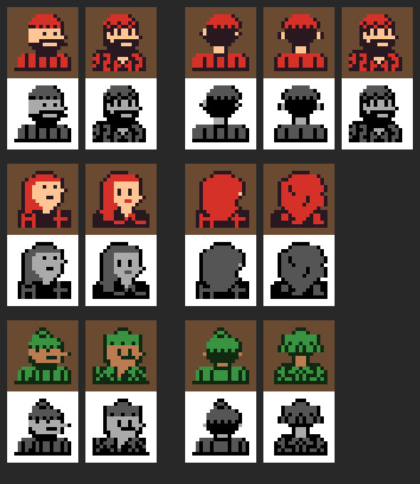
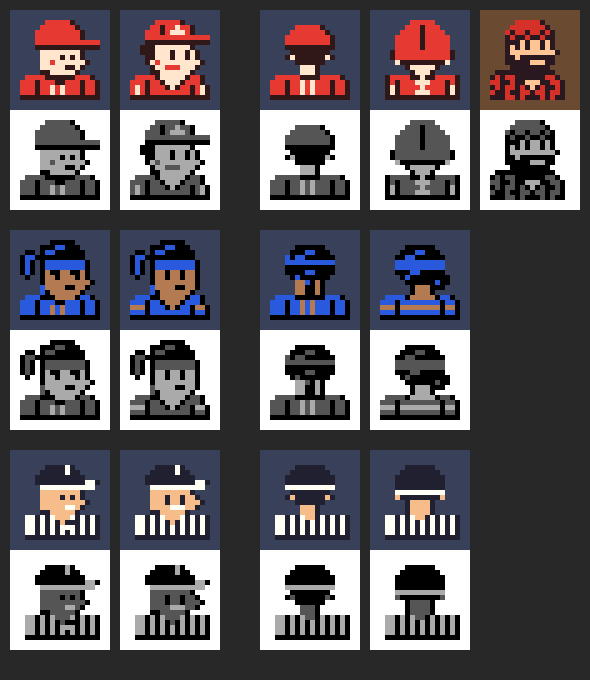
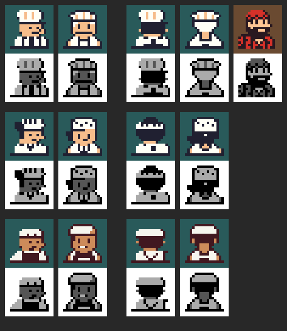
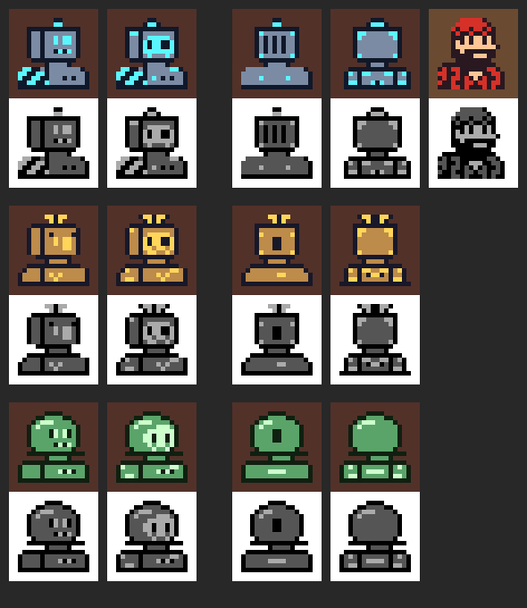
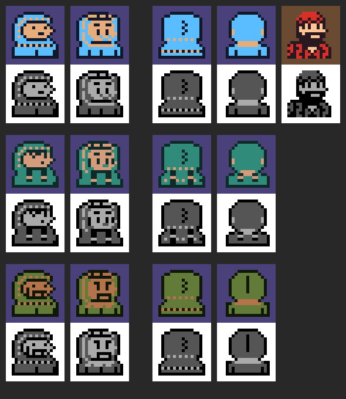
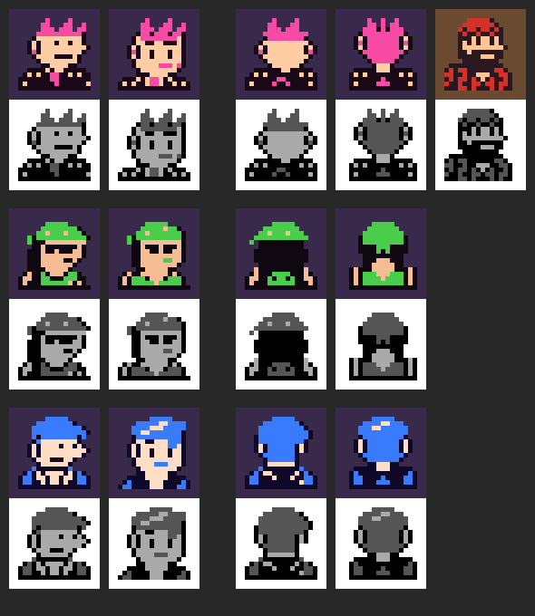

Every question waiting on your answer, with its pictures. Answered questions come off this list. Reply in chat with the number, e.g. "Q12: shared".
3 open · updated 2026-10-26 · main dcfd416
Q56
Patron pass: Lodge, Stadium, Bistro
Which of these 9 are good? Reply by name: OK, redo (say what), or keep the old one.
Each row: front now, front pass, then back now, back pass. Color on top, DMG below. Top right: your CEDAR.
My doubts: ASH's back (a tree?), PETE's back (a helmet?), BRIE's back, BASIL's grin and floppy cap.
Igloo and Robot Factory are being drawn.
Lumber Lodge: CEDAR (back only), WILLOW, ASH

Stadium: PETE, SERENA, NORM

Bistro: PIERRE, BRIE, BASIL

Q57
Patron pass: Robot Factory, Igloo, Chrome Cow
Which of these 9 are good? Reply by name: OK, redo (say what), or keep the old one.
Same layout as Q56: front now, front pass, back now, back pass. Color on top, DMG below.
My doubts: BOXY and VOLTA have the same face idea. The Igloo three look alike on the DMG; a pompom on POLLY or a taller hood on MOOSE would help. Igloo faces turned more to the front.
Chrome Cow: BANDIT's shades are now two lenses; SLICK has a new forelock.
Robot Factory: BOXY, VOLTA, BLIP

Igloo: IGGY, POLLY, MOOSE

Chrome Cow: SPIKE, BANDIT, SLICK

Q58
Patron pass: Teahouse, Jungle Zoo, Space Lounge
Which of these 9 are good? Reply by name: OK, redo (say what), or keep the old one.
Same layout as Q56: front now, front pass, back now, back pass. Color on top, DMG below.
My doubts: RONIN's face is less turned, and his back has a skin strip that may read as a visor. BAMBOO's back is still a white head. XENO's face is now the light grey.
MUDDY lost his belly mud marks (they read as a pocket).